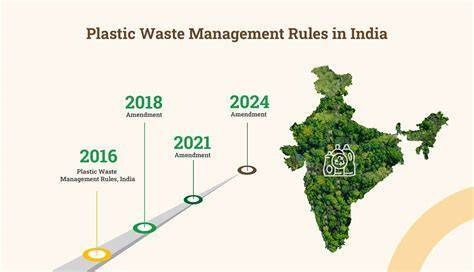
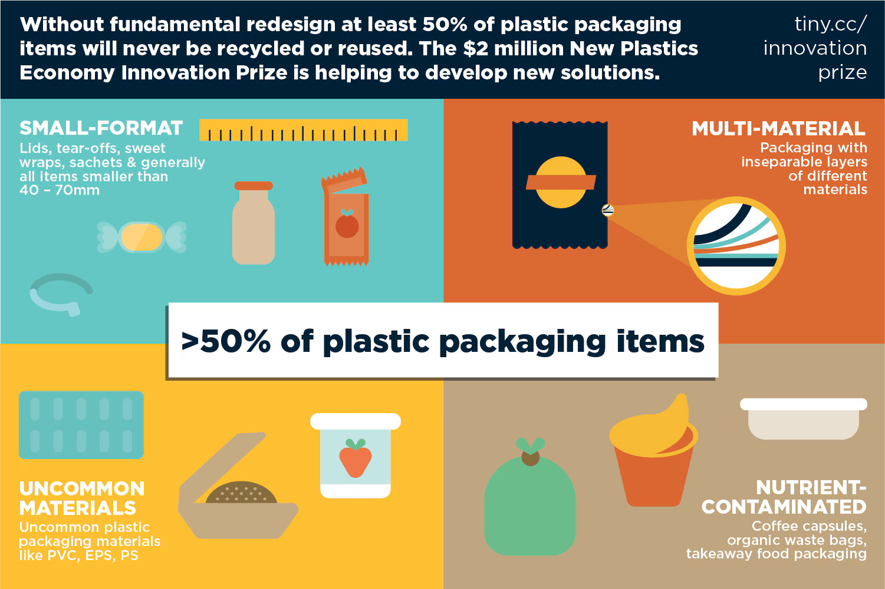

Ending plastic pollution requires transforming the interconnected systems that design, produce, consume, and manage plastics. This requires shifting incentives, subsidies, and policies as well as materials and infrastructure.
With ambitious, coordinated policy, it is possible for some regions to eliminate 97% of mismanaged plastic waste by 2050.
^ Click image for India Solutions context

Upstream interventions aim to reduce plastic pollution by limiting production and use in the first place, tamping down supply, and shifting away from single-use packaging.
Key policy measures include:
Downstream interventions aim to responsibly manage plastic waste after use. Improving waste management requires significant infrastructure investments to serve all communities safely.
Additional systems include: